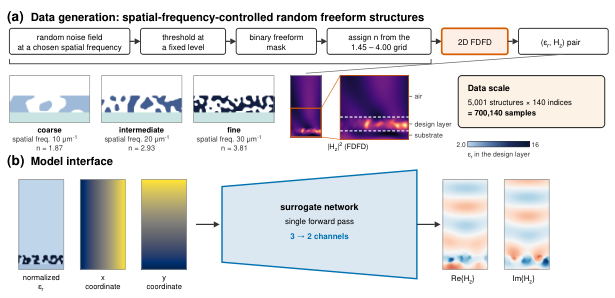
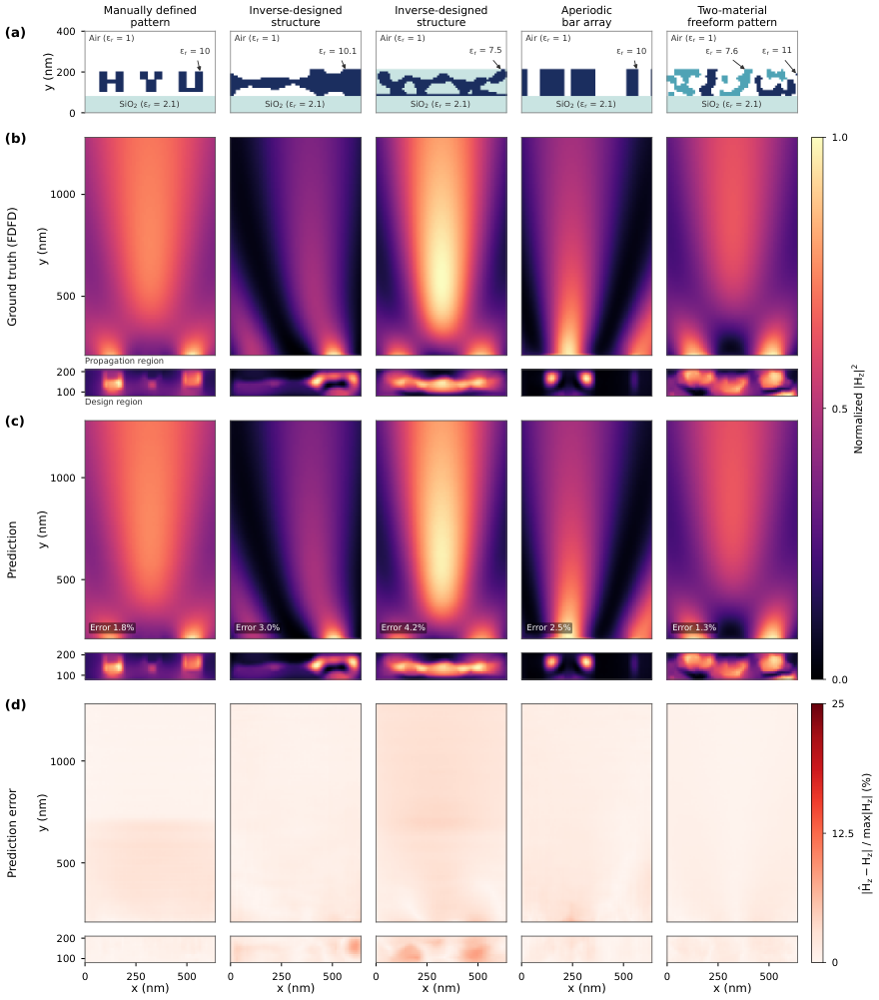
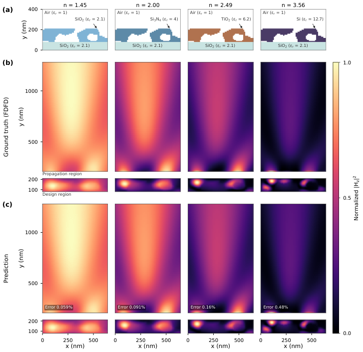
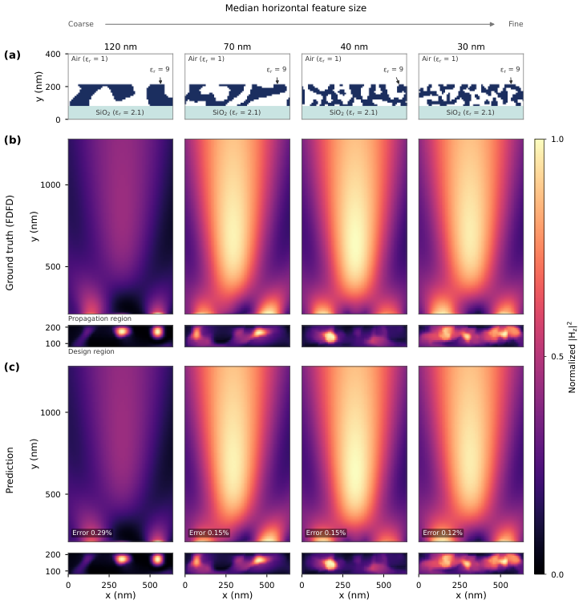
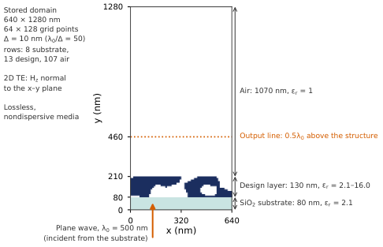
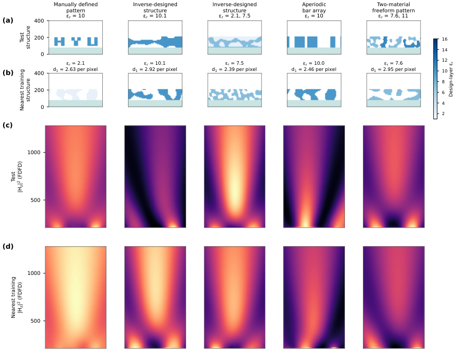

支撑信息
从随机图案到纳米光子结构：无需重新训练的电磁场预测
摘要
电磁替代求解器能够加速纳米光子设计，但要实现更广泛的应用，就需要对未见过的几何结构与材料排布做出准确预测。在随机介质图案上进行训练，使网络无需重新训练即可直接预测多种二维纳米光子结构中的复电磁场。网络以空间介电常数分布作为输入，训练样本取自一个包含700,140种组合的数据集，这些组合由5,001种随机自由形状介质图案与140个取值范围为2.1至16.0的相对介电常数组合而成。训练后的模型可预测非周期棒状阵列、人工定义图案、逆向设计超透镜、逆向设计二值结构，以及未包含在训练中的双材料自由形状图案的场分布。在35,441个几何–介电常数样本上，膨胀残差网络的平均相对场误差为1.4%–7.6%。对于6,950个逆向设计超透镜样本，三种最准确的架构预测透射功率的中位相对误差为0.7%–0.9%。准确度取决于折射率和结构尺度，对于比训练所用图案更粗糙的图案，误差更大。这些结果表明，模型可迁移到独立构建的几何结构以及训练中未出现的介电值新空间排布。因此，随机图案训练支持电磁替代求解器在多个结构族之间的复用，为在材料筛选、迭代光学设计与制造公差分析之间共享训练成本提供了基础。
关键词。电磁替代求解器、纳米光子学、介质材料、未见纳米结构、复场预测、超表面
1 引言
早期纳米光子学设计主要依赖解析模型、物理直觉，以及对有限数量几何参数的迭代调整 [1]。例如，光子晶体利用能带结构计算进行设计，而许多超材料设计则以有效介质模型和亚波长谐振器的电磁响应为指导 [2, 3]。对于周期结构，Bloch 周期边界条件通过将仿真限制在代表性单元胞内降低了计算成本 [4]。超表面设计同样采用针对不同单元胞几何结构计算得到的光学响应库，并从中选取单个元件、加以排布，以产生规定的空间响应 [5, 6]。这种方法通常依赖局部周期近似，该近似为每个元件赋予对应无限周期阵列的响应。因此，它避免了对整个器件的直接仿真，但当相邻元件差异显著，或周期模型难以准确表示它们之间的相互作用时，其准确度会下降 [7, 8]。当局部优化的单元胞组装成更大器件时，这些差异会引入拼接误差 [9]。在光子集成电路（PICs）中，波导理论、耦合模理论和绝热设计原理指导了定向耦合器、绝热过渡和模式转换器的发展，并且通常通过数值仿真进一步改进 [10]。这些方法在适用条件内提供了高效的设计策略，但将其推广到复杂非周期结构时，需要能够捕捉超出底层简化假设的电磁相互作用的方法。

这些进展引出了一个问题：传统光学设计是否已接近在给定材料和制造约束下可达到的最佳性能 [1]。在光子集成电路（PIC）中，拓扑优化已使平面自由曲面器件具有显著更小的占位面积，同时保持高光学性能，展示了超越传统布局的机会 [11, 12]。自由曲面超光栅可利用空间重叠光学模式之间的耦合，实现高效大角度光束偏转 [13]。基于扩散的逆向设计将学习到的、与制造兼容的二元图案分布与伴随梯度相结合，以搜索高性能自由曲面结构 [14]。这些方法在考虑电磁相互作用和制造约束的同时，扩展了可及的设计空间。然而，全波逆向设计要求在优化过程中随着材料分布演化反复求解麦克斯韦方程。尽管伴随方法能高效计算关于大量设计变量的梯度，但重复的前向与伴随仿真仍然计算量很大，尤其对于大尺寸器件或涉及多个波长和入射角的优化而言 [15, 16]。因此，这些场计算的累积成本构成了自由曲面纳米光子学设计的主要障碍。在保持足够准确度的同时加速电磁场预测，将能够在实际计算预算内评估更多候选结构和运行条件。
深度学习代理模型通过学习从光学结构到电磁响应的映射来缓解这一计算负担，使新设计无需为每次预测执行传统全波仿真即可评估[17, 18]。预测空间分辨复场的模型将这一能力扩展到单一性能指标之外，使人们能够从预测场计算多种光学量[19, 20, 21]。神经算子也已被训练用于从三维介电常数分布预测稠密伴随梯度场，以加速迭代逆向设计[22]。近期研究扩展了这些求解器可处理的材料、结构和激励条件。WaveY-Net 预测折射率范围为 2.48 到 3.57 的周期性介质超光栅中的场[20]。Augenstein 等展示了针对固定折射率为 1.5 的三维自由形状散射体的场预测与逆向设计，该折射率代表了三维激光打印中使用的聚合物[23]。邻域注意力模型还通过预训练和随后的任务特定微调支持自由形状超光学逆向设计[24]。NeurOLight 将器件几何结构和激励条件纳入集成光子学的神经场预测[25]。SNAP-DDM 将专用神经子域求解器与迭代区域分解相结合，以适应不同的几何布局和计算域尺寸[26]。多级求解器将神经子域模型与全局粗校正相结合，以加速麦克斯韦方程组的迭代求解[27]。我们近期提出的波长条件求解器可预测训练数据中不存在的波长处的场，并使用以 20 nm 间隔采样的参考场[28]。
尽管取得了这些进展，已训练求解器能在多大程度上复用于不同的光学设计问题仍需审慎评估。在规定的一组材料、几何结构和激励条件下的准确度，本身并不能确立对不熟悉结构或这些参数新组合的可靠迁移[17]。因此，评估应区分对来自训练分布的样本的预测与对通过独立设计流程生成的结构预测。当在随机生成图案上训练的模型应用于非周期条阵列或通过逆向设计制造的器件时，这一区分尤为重要。广泛可复用的电磁代理模型应在多样材料组成与结构配置下保持预测准确度，而无需针对每个设计任务重新训练。实现这一能力将使数据生成与训练成本可在多个应用间分摊，从而降低材料筛选、迭代优化和制造公差分析的计算开销。
在此，我们展示无需重新训练即可预测多种介电材料和此前未见纳米结构中的复电磁场。图 1 说明了在随机自由形状介电图案上训练如何能够为新的结构设计和材料配置实现场预测。训练图案覆盖不同的特征尺寸以及 2.1–16.0 的相对介电常数。每个空间介电常数分布同时编码材料属性及其排布方式，神经代理模型预测磁场 的实部和虚部。训练后，在评估此前未见结构时网络参数保持不变。我们采用统一的训练协议训练四种神经网络架构，并在独立测试集上评估其预测，这些测试集包括非周期条阵列、人工定义图案、逆向设计超透镜、逆向设计二值结构以及双材料自由形状图案。对复场、相位分布和透射功率的分析表明，在随机自由形状图案上训练能够为不同设计流程生成的结构实现准确的场预测。我们进一步量化折射率和结构尺度如何影响预测误差，识别出准确度下降的材料与几何范围。这些结果表明，在测试条件内，训练好的电磁代理模型可复用于多种材料选择和结构设计。将这一能力扩展到其他波长、照明条件和三维结构，有望使同一训练模型支持材料筛选、几何优化和制造公差分析，从而减少为各个设计任务分别建立模型的需求。
2 方法
纳米光子学早期的神经代理模型学习从几何参数到散射光谱的映射 [29]。后续研究利用物理增强网络处理空间电磁场预测 [20]，并通过域分解扩展神经代理求解器 [26]。物理驱动训练还利用麦克斯韦方程残差约束预测场 [30]。在这些进展基础上，我们考察在随机介电图案上训练能否无需重新训练即可对常规的、人工指定的以及逆向设计的纳米结构进行场预测。方法学重点在于构建训练集，并评估其在不同结构族之间的泛化能力。
训练集的构建也已通过误差引导主动学习[31]以及困难材料与源配置的动态生成[32]得到解决。在本研究中，我们生成随机自由形状介电常数分布，不依赖于预定义的器件几何或光学设计目标。该方法对多样的介电排列进行采样，而无需在训练期间提供目标器件族的示例。四种成熟的神经网络架构在同一数据集上训练，并遵循共同的训练协议，以评估该训练策略对泛化的支持有多一致。非周期条阵列、人工定义图案和逆向设计结构用于测试跨几何族的迁移，而双材料自由形状图案用于测试向新材料排列的迁移。在所有训练参数保持固定的情况下，这些测试集上的预测准确度是泛化的主要度量。留出的材料–几何组合为训练分布内的性能提供参考。在这些比较中，波长、偏振和照明保持不变，以在一致的光学条件下评估结构和材料迁移。

2.1 代理模型构建与场表示
神经场求解器已利用空间材料图来表示自由形状结构，从而避免使用固定的几何参数列表 [20, 23, 33]。 这种表示方式既能描述形状变化，也能描述折射率变化。 其对模型复用的价值取决于单一学习到的映射能否在足够广泛的训练集上兼容这两类变化。 因此，我们编码完整的相对介电常数分布，并对所有所评估的结构采用统一的输入–输出表示。
图 2 展示了预测过程。 在固定的照明和仿真条件下，网络近似
| (1) |
其中是面内坐标处面外磁场的预测复振幅。 映射表示具有训练参数的神经网络，表示空间相对介电常数分布。 符号表示复数集。 归一化介电常数图和两个坐标通道构成网络输入，而的实部和虚部构成输出。
2.2 用于数据生成的电磁仿真
训练场和评估场使用 Ceviche 0.1.3 [34]中的二维有限差分频域（FDFD）求解器fdfd_hz计算。 FDFD将频域Maxwell方程离散到交错网格上，并将其表示为复场振幅的稀疏线性系统[35]。 同一求解器为所有数据集提供了参考场，包括最初使用时域或频域方法优化的结构。
每次仿真均包含衬底上的介电设计层以及透射侧的空气区域。 我们采用二维横电（TE）偏振，其中和，且垂直于仿真平面。 时间依赖关系为，其中，是角频率，是时间。 除非另有说明，真空波长为 nm，所有物理介质均无损耗且无色散。 这些条件允许在固定波长下比较不同几何结构和指定折射率。
计算域在横向和传播方向上分别包含个单元，均匀间距为 nm。 30个单元的拉伸坐标完美匹配层（PML）终止了全部四边，以近似开放边界[36]。 一条单位振幅磁流线沿横向均匀分布并位于衬底中，激发正入射照明。
提取了一个居中的个单元区域（对应 nm），以形成成对的介电常数和复场数组。 该区域保留了结构和透射场区域，同时排除了源和PML。 对于随机图案训练几何结构，它包含8行具有的衬底、13行设计层和107行空气。 对于具有不同厚度的评估结构，光学读出线相对于每个结构的上边界定位。
支持说明7分析了二阶有限差分模板的均匀介质数值色散。 在 nm和 nm处，轴向相对数值波数误差从处的0.1387%增加到处的1.0839%。 这些估计排除了材料界面、PML、有限域、源和线性求解器误差，因此不能确定相对于连续解的总误差。 所报告的代理模型误差衡量的是与离散FDFD参考场之间的偏差。
2.3 随机图案生成与数据集构建
随机自由形状图案用于采样具有不同特征宽度、间隙和连通性的介电排列。这些几何变化影响散射、近场耦合和干涉，它们共同贡献于集体光学响应[37, 13]。目的是让网络接触亚波长特征之间的多样相互作用，同时不将训练几何结构限制于特定器件族。
使用梯度噪声生成空间相关图案，该方法由与晶格顶点相关的伪随机梯度构造连续标量场[38]。我们在倾斜晶格上评估局部梯度贡献，并使用随距离衰减的权重将其平滑组合。每个贡献取决于梯度向量与从晶格顶点到评估点的位移的点积。所得场在空间中连续变化，缩放其输入坐标会改变噪声变化的特征长度。对该场进行阈值化可产生具有可调结构尺度的二值材料区域和间隙。
图2(a) 展示了该过程。噪声场在个单元的设计层上采样，并在零处进行阈值化。对于每个几何结构，无量纲坐标缩放参数从中均匀抽取。的较大值产生更快的空间变化，并倾向于更精细的图案。在规定的网格间距下，该区间对应标称生成器空间频率范围 10–30 。因此，在不同样本间改变可引入一系列结构尺度，而不指定单个特征的形状。
5,001 个掩模中的每一个都与 140 个相对介电常数，，配对，对应折射率约为 1.45–4.00。材料像素被赋予所选介电常数，而其余设计层像素被赋予空气介电常数。这种配对独立于几何结构改变介电对比度和材料内波长。每个完整结构均使用第2.2节中的 FDFD 设置进行仿真，得到 700,140 个几何–介电常数样本。所得复场包含每个配置在规定照明下的多次散射和近场相互作用。独立测试集评估基于这些响应进行训练能否支持对其他设计流程生成的结构进行预测。
结构尺度使用水平材料弦长[39]进行表征。每条弦定义为沿水平网格行的连续材料像素段。对于每个掩模，特征尺寸定义为以网格单元表示的中位弦长乘以。该量从 FDFD 计算所用的离散化二值掩模测量得到，而不是由生成器频率的倒数推断得到。
2.4 数据划分与泛化测试
随机图案数据池按几何–介电常数对层级进行划分。对每个采样得到的介电常数，样本按约 80%、10% 和 10% 的比例随机分配到训练集、验证集和留出集，并使用由基础种子 42 导出的、针对该介电常数的种子。所得集合包含 560,113 个训练样本、70,015 个验证样本和 70,012 个留出样本。相同的几何–介电常数对不会跨越不同划分，但同一几何结构可以在不同介电常数下出现在不同划分中。所有采样得到的介电常数值均在训练集中有所体现。因此，留出集评估的是采样分布内未见的几何–介电常数组合。
泛化能力通过四个测试集单独评估，这些测试集的几何结构独立于训练图案生成器构建。第五个集合使用同一生成器与两种设计材料，以评估向训练中未出现的材料排布的迁移能力。这些测试集不参与网络训练和检查点选择，所有预测均使用固定的已训练参数。测试几何结构与采样条件将随相应结果一并介绍。
2.5 网络训练与模型选择
网络架构规定了空间相互作用如何表示，而训练数据则提供了几何结构与介电常数如何决定电磁响应的示例。例如，已提出跨轴因子化算子来连接局部器件结构与长程光场图案 [40]。仅靠架构改进并不能在训练分布之外建立准确预测。因此，我们关注在宽介电常数范围内对多样随机图案进行训练，是否能够在无需重新训练的情况下实现对未见几何结构和材料排布的场预测。使用具有不同空间表示的成熟架构，评估不同网络设计在多大程度上实现这一能力。
我们比较傅里叶神经算子（FNO）、因子化傅里叶神经算子（F-FNO）、U-Net（U 型网络）和空洞残差网络（DilResNet）[41, 42, 43, 44]。这些模型通过傅里叶域运算、分层卷积或空洞卷积表示空间相互作用。其参数量在 5.33 百万至 5.98 百万之间。所有模型使用相同的输入–输出表示、数据划分、损失函数和优化过程。表 S2 给出了架构配置、参数量和训练时间。
训练使用 AdamW，初始学习率为 ，权重衰减为 [45]。经过 500 个预热步后，学习率遵循余弦衰减调度 [46]。批大小为 64，梯度裁剪阈值为 1.0，并使用混合精度 [47]。每种配置在单个 NVIDIA RTX 6000 Ada GPU 上使用单个随机种子训练最多 200 个轮次，早停耐心值为 20 个轮次。
监督损失是预测复场与参考复场之间的相对 误差，在归一化后的实部和虚部输出通道上计算（支持说明 4）。对每个样本，相对误差和归一化均方误差（NMSE）定义为
| (2) |
其中 和 分别表示参考和预测的复磁场， 包含保留域内的所有网格点。相对误差使用拼接后的实部和虚部场分量计算。
对每种架构，保留验证损失最低的检查点，并在后续所有评估中直接使用，不再更新参数。计算评估指标前，场会先反归一化。正文以百分比形式报告相对复场误差 。图 S12 给出学习历史和所选检查点。该比较在共同训练流程和相近参数预算下评估所选配置。它并不确立每种架构可达到的最佳性能，也不量化不同随机种子间的变异性。
3 结果
我们评估在随机自由形状图案上训练的模型是否无需重新训练即可预测其他纳米光子结构的场。结果首先针对独立结构类型，然后考察折射率和特征尺寸依赖性、透射光学量、超出训练尺度区间的预测以及计算成本。
3.1 独立纳米光子测试结构的场预测

随机图案训练的目标是获得一个场预测器，使其可在纳米光子设计任务中重复使用，而无需为每个器件族单独准备训练数据集。因此，我们考察在不同介电几何和介电常数上训练是否能够支持对人类设计或数值优化生成的结构的场预测。评估这一能力需要在从训练总体中抽取的留出几何-介电常数组合之外进行测试。以下测试在固定网络参数和光学条件的情况下，评估对训练中未出现的独立构建几何和材料排布的迁移能力。
在随机介电图案上训练的 DilResNet 能够在不重新训练的情况下，为独立构建的纳米光子结构预测复磁场。图 3(a) 展示了一个人工定义图案、两种逆向设计结构（二值结构和超透镜）、一个非周期条阵列，以及一个双材料自由形状图案。前四种几何结构独立于训练图案生成器构建。第五种保留该生成器，但在设计层内引入两种介电材料。所有展示的预测均使用一个经验证集选择的 DilResNet 检查点，在 500 nm 二维 TE 照明、无损耗且无色散介质条件下完成。
图 3(b) 中 的 FDFD 参考分布显示了设计层内的局域场增强以及透射区中独特的光强图案。图 3(c) 中的预测再现了这些特征，包括逆向设计二值结构的非对称分布、超透镜上方的聚集光强，以及条阵列上方的展宽光强特征。设计和传播区域使用不同的显示归一化，且每个区域内参考与预测尺度相匹配。从左到右，相对复场误差分别为 1.8%、3.0%、4.2%、2.5% 和 1.3%。这些误差使用式 (2) 在完整保留域上评估，并同时计入振幅和相位差异。图 3(d) 中的复场误差图定位了设计层和传播区内的残差差异，其中超透镜示例可见空间上更扩展的残差。
对于图 3 中展示的五个结构，DilResNet 的预测比直接复用按介电常数图 距离选出的最近训练样本场所得结果准确得多。每个结构的最近样本通过在设计层介电常数图之间的平均逐像素距离基础上，对 560,113 个训练样本进行穷举搜索确定。直接复用所选 FDFD 场得到的相对复场误差为 22%–77%，而 DilResNet 为 1.3%–4.2%。支持信息注 10 和图 S16 描述了选择过程以及各个示例的比较。
表 1 将比较扩展到五个评估集上的 35,441 个场样本。在测试的配置中，DilResNet 在四个集合中给出最低平均误差，集合级平均值为 1.39% 至 7.57%。对于逆向设计的超透镜，U-Net 表现最佳，平均误差为 6.54%，而 F-FNO 为 7.49%，DilResNet 为 7.57%。五个集合的等权平均以 DilResNet 最低，为 3.89%，其次是 F-FNO 的 4.65%、U-Net 的 5.18% 和 FNO 的 13.3%。尽管样本数不同，这种聚合仍给每个集合相同权重。
预测准确度还取决于结构族。对于 F-FNO、U-Net 和 DilResNet，两个逆向设计集的平均误差均高于非周期条形阵列、人工定义图案和双材料自由形状图案。不过，两个逆向设计集偏好的架构并不相同。U-Net 在超透镜上表现最佳，但在逆向设计二值结构上的平均误差为 10.1%，而 DilResNet 为 5.61%。这些差异出现在相同的采样介电常数和光学条件下，表明其对几何分布具有灵敏度。
对每种架构，双材料集在独立集间的平均误差最低。在所示示例中，具有 和 11 的区域预测的相对复场误差为 1.3%。两个介电值均在训练中出现，但它们在设计层内的共存并未出现。因此，该评估证明了对新材料排列的迁移能力。由于图案保留了训练生成器，其较低误差不能仅归因于材料混合。
对于 70,012 个留出的几何–介电常数组合，架构排名发生变化。U-Net 给出最低平均误差 0.14%，其次是 DilResNet 的 0.19%、F-FNO 的 0.23% 和 FNO 的 0.92%。尽管这些组合被排除在训练之外，其几何结构可能以其他介电常数出现在训练中。因此，其较低误差描述的是采样几何分布内的预测。U-Net 在留出组合上的优势并未延伸到独立集的平均值；在独立集平均中，DilResNet 表现最佳。因此，要可靠评估模型复用，除留出组合外，还需要在独立构建的结构上进行测试。
| Evaluation set | FNO | F-FNO | U-Net | DilResNet | |
|---|---|---|---|---|---|
| Aperiodic bar arrays | 13,900 | ||||
| 人工定义图案 | 2,641 | ||||
| 逆向设计超透镜 | 6,950 | ||||
| 逆向设计二值结构 | 6,950 | ||||
| 双材料自由形状图案 | 5,000 | ||||
| 五个测试集的平均值 | 35,441 | ||||
| Held-out combinations | 70,012 |
3.2 跨折射率与结构尺度的场预测


在纳米光子设计中复用电磁代理模型，需要准确预测材料属性和几何结构变化引起的场变化。介质超表面采用折射率不同的材料和特征尺寸不同的结构来控制透射光的空间分布 [48, 49, 5]。旨在跨这些选择复用的预测器必须通过输入介电常数分布来体现其影响。我们通过两组互补比较考察这一能力。第一组改变固定几何结构的折射率，第二组在固定折射率下比较特征尺寸不同的几何结构。所有预测均使用一个经验证集选择的 DilResNet 检查点，且不重新训练。
材料比较评估在几何结构保持不变时，预测场如何响应介电对比度的变化。图4(a) 中的四种配置，其设计材料介电常数分别为、4.0、6.2 和 12.7，对应折射率约为、2.00、2.49 和 3.56。衬底介电常数保持为，周围介质为空气。这种安排使得在其余仿真条件相同的情况下，场变化可归因于所指定的设计材料介电常数。
材料标签将这些标称介电常数与指定参考波长下的常见光学材料对应起来。数值 代表波长接近 [50] 处的熔融石英。氮化硅在 633 nm 处给出代表性数值 [48]。对于非晶二氧化钛， 大致对应于 470 nm 附近的波长，这是根据已报道的色散曲线 [49] 估计得到的。数值 对应于约 [51] 处的晶体硅。这些关联为所指定的实介电常数提供了物理参考点。在本次比较中，四个数值均施加在共同的仿真波长 500 nm 处，并排除了吸收和材料色散。因此，材料标签标识的是其在所述参考波长下的代表性介电常数值，而不是在 500 nm 处评估的完整材料模型。
随着指定折射率增大，参考场表现出显著的空间变化。 的 FDFD 分布在图 4(b) 中显示，在 处的传播区域中存在一个宽而细长的光强分布，同时设计层内有两个扩展的光强极大值。在折射率更高的示例中，透射光强分布变窄，而图案化层内的极大值变得更加局域化。在 处，设计层内出现额外的空间特征。因此，固定几何结构在其介电对比度变化时会产生不同的场分布，这为直接检验学习到的映射所捕捉的材料依赖性提供了条件。
预测场在设计区域和传播区域内再现了这些随材料而变化的现象。图 4(c) 中可以看到与参考结果的一致性，包括透射光强分布的横向范围以及结构内部局域极大值的位置。对于 、2.00、2.49 和 3.56，相对复场误差分别为 0.059%、0.091%、0.16% 和 0.48%。尽管误差在这四个示例中逐渐增大，但在每种情况下均低于 0.5%。这些结果表明，在测试条件下，仅改变输入中的材料数值就足以让同一个训练好的预测器再现相应的场变化。这一趋势在数据集层面同样成立。在这四个折射率下，对于留出组合，DilResNet 误差中位数从 0.05% 增至 0.23%；对于非周期条阵列，从 0.09% 增至 3.99%；对于逆向设计的超透镜，从 0.16% 增至 12.2%（表 S1），这表明高折射率是要求更高的材料区间，尤其是对于独立构建的结构。
在固定介电对比度下，结构细节的变化提供了一种补充性评估。图 5(a) 中的四个随机图案，其水平特征尺寸的中位数分别为 120、70、40 和 30 nm，共同的设计材料折射率为 。它们的几何结构从相对较大的介电区域，到包含更小材料特征和空气间隙的更精细排布不等。四个特征尺寸均低于 500 nm 的真空波长。基底、周围介质、照明和计算网格保持不变，因此该比较在保持指定材料属性不变的同时，考察了不同几何变化下的场预测。
几何差异同时改变了局域场分布和透射空间分布。在设计层内，图 5(b) 中的 FDFD 参考场在 120 nm 结构的上边界附近显示出两个紧凑的光强极大值，而 30 nm 结构则表现出若干沿横向分布的极大值。中间示例的局域极大值在位置和空间范围上各不相同。在传播区域中，70、40 和 30 nm 示例产生拉长的光强分布，其差异在图案化层附近最为显著。它们在远离结构处大体相似的分布，与设计层内部及紧邻上方截然不同的场分布并存。
代理模型以较低的复场误差捕捉了这些几何变化。图 5(c) 中的预测再现了介电图案内的局域极大值以及传播区域中的空间分布。对于 120、70、40 和 30 nm 示例，相对误差分别为 0.29%、0.15%、0.15% 和 0.12%。因此，使用相同的训练参数，在所展示的结构细节范围内保持了准确预测。更精细示例中较低的误差并不能确立对特征尺寸的一般依赖性，因为掩模在形状、连通性和材料排布上也有所不同。
两种比较均使用完整保留域上的复场来量化一致性，如公式（2）所定义。因此，所报告的误差包含无法仅从强度图评估的振幅和相位差异。为便于可视化，设计区域和传播区域采用各自的光强归一化，并对每个参考和预测使用匹配的标度。这些显示选择揭示了局域特征，同时不改变定量误差评估。
总之，这些结果表明，单个经过训练的场预测器能够适应所采样随机图案总体中指定折射率和亚波长结构细节的变化。所示样本是留出的几何–介电常数组合。它们的几何结构可能以其他介电常数出现在训练中，并且所有指定的介电常数值均已在训练数据中出现。因此，这些比较确立了模型对留出组合的准确度，并补充了此前在独立构建结构上的评估。它们还区分了模型复用的两项要求：在材料指定变化下准确预测，以及在几何分布变化下可靠迁移。接下来的分析通过比较透射功率和相位分布，考察预测场的光学意义。
3.3 透射振幅、相位与功率的预测
准确预测透射振幅和相位，是评估纳米光子结构如何重新分布入射光场所必需的。振幅描述场幅度的空间变化，而相位决定支配后续传播的干涉。全域复场误差概括了两者的综合差异，但不能显示这些差异在透射波前上出现的位置。因此，我们考察直接由预测复场获得的空间分辨透射分布。
在距结构的同一距离处评估透射场，以比较四种架构预测的光学响应。图 6(a)中的读出配置将输出线置于设计层上边界上方处，在500 nm的仿真波长下对应250 nm。复透射分布为，其中是横向位置，是输出线上的复磁场，是在同一输出线上评估的入射场参考。其幅度和辐角分别给出归一化磁场振幅和透射相位。参考场和预测场使用相同的入射场相位参考。
这四种架构再现了所选逆向设计超透镜透射振幅的主要特征。该示例是依据四个架构平均后的逐样本复场误差的中位数选取的。图 6(b) 中的黑色参考曲线在 nm 附近呈现一个宽的振幅极大值，随后在 nm 附近出现极小值，并向右侧边缘再次增大。预测曲线捕捉到了这一空间特征序列。U-Net 在振幅极大值附近紧密跟随参考曲线，而 F-FNO 和 DilResNet 略微低估了其高度。FNO 表现出更大的峰值振幅下降，并且极大值向更小的 方向移动。这些曲线在振幅极小值附近彼此接近，表明差异的大小沿输出线变化。
相位比较揭示了从振幅曲线中不太明显的额外差异。图 6(c) 中绘制的误差是绝对包裹相位差，以一个完整相位周期的百分比表示，
| (3) |
其中 是以百分比表示的相位误差， 和 分别为预测和参考复透射分布，星号表示复共轭， 返回 中的主相位。该定义考虑了相位周期性，并用 对角度差进行归一化。
在该示例中，FNO 表现出最大的相位差异，在 nm 附近达到一个周期的 3.26%，约相当于 。这一极大值出现在主振幅极大值之外，说明仅靠振幅一致性并不能完全表征预测的透射场。F-FNO、U-Net 和 DilResNet 保持在一个周期的 1.3% 以下，对应约低于 的相位差。然而，它们的空间误差分布不同。F-FNO 在输出线中段保持一个相对宽的误差平台，而 U-Net 和 DilResNet 通常在其右侧显示出更小的误差。这些曲线在若干位置交叉，表明局部相位误差最小的架构取决于横向位置。
这些振幅和相位比较表明，在随机介电图案上训练能够支持在无需重新训练的情况下恢复逆向设计结构的透射复场。在所示案例中，预测结果保留了宽的振幅分布，同时 F-FNO、U-Net 和 DilResNet 解析空间相位的差异显著小于 FNO。由于这些曲线描述的是一个选定的样本，其局部差异应与数据集级评估结合解读。积分透射功率提供了对光学响应的补充评估，并利用预测的电场和磁场与实坡印廷通量分开计算。在 6,950 个超透镜样本上，F-FNO、U-Net 和 DilResNet 给出的相对透射功率误差中位数为 0.7%–0.9%，与 FDFD 参考功率的皮尔逊相关性为 0.994–0.996，而 FNO 为 3.7% 和 0.968（支持信息注 8 和表 S5）。
相位比较依赖于各数据集之间一致的入射场参考。对均匀衬底区域中场的拟合表明，在 14 个评估数据集上，数据集平均入射相位之间的一致性在 以内，圆标准差不超过 ，详见支持说明 8。这些检查支持在共同照明约定下比较预测相位与参考相位。图 S13 中的解包裹透射相位分布将这一比较扩展到来自七个评估集的选定样本，揭示了不同结构中观察到的宽相位曲率和更尖锐的空间跃变。
将均匀相位偏移与空间变化的差异分开，可以更具体地评估波前一致性。我们从相量和 的辐角估计该常数偏移，其中每个局部相位差由预测振幅与参考振幅的乘积加权。减去该偏移并将剩余差异包裹到 后，我们计算以弧度表示的参考光强加权均方根残差 （支持说明 3）。该残差描述均匀相位对齐后空间相位分布的差异。原始相位参考保留在完整复场误差以及图 6(c) 中的逐点相位比较中。
残差相位一致性由 量化，其中接近 1 的值表示残差相位差异较小。这种指数依赖关系源于光学像差分析中使用的相位方差近似 [52]。不过，这里的比较是在预测相位分布与 FDFD 相位分布之间进行的，不包括振幅误差。因此， 是残差相位一致性的诊断指标，并不量化结构的焦点斯特列尔比或聚焦效率。
所评估像素的集合也会影响相位统计。图 S11 中的振幅掩模比较针对超透镜和留出数据集保留参考振幅像素中最高的 5%、20%、50% 或 100%。将输出线分析限制在高振幅像素会降低残余相位误差，尤其是对更高折射率的超透镜样本。全域残差对保留比例表现出不同的非单调依赖关系。这些结果表明，掩模会改变所评估场的部分，并可能显著改变所报告的相位一致性。因此，主要的全域和输出线分析保留所有像素，振幅掩模仅用于检验该诊断指标的灵敏度。
光学评估进一步区分局域场误差与积分透射功率。对于70,012个留出组合，图 S10 中的读出位置扫描将输出线从结构上方的移动到。振幅和相位误差通常随距离增加而减小，而所报告的预测透射功率与参考透射功率之比在整个扫描过程中始终接近1。因此，在所评估的距离范围内，功率比较相对稳定，尽管局域场误差度量仍依赖于位置。
这些检查支持在测试条件下使用预测复场来评估透射振幅、空间相位和积分功率。其范围与每个完整仿真结构的 FDFD 光学响应一致。焦点光强以及分别预测结构的相干合成，将需要对振幅分布、相对相位和电磁耦合进行额外评估。以下分析考察预测准确度如何随结构尺度在训练生成器区间内和区间外变化。
3.4 跨结构尺度的泛化
迁移到新的纳米光子学设计时，当其几何特征与训练数据中表示的特征不同，需要准确的场预测。因此，我们考察当随机图案的空间统计特性超出训练所用范围时，预测准确度如何变化。图 7中的评估改变图案生成器的空间频率参数，同时保持训练后的网络参数、照明和计算网格不变。该参数控制用于构造二值掩模的噪声场的空间变化。它并不唯一确定物理特征尺寸，因为阈值化会产生尺寸和连通性不同的介电区域与空气间隙。
尺度扫描评估独立生成的几何结构，同时保留训练中表示的介电值。训练生成器采样 10–30 的连续空间频率区间，而评估包含跨越 5.0–35.0 的八个组。每组包含14个独立生成的几何结构，在 2.2 至 15.9 范围内的138个相对介电常数下评估，从而每组产生1,932个场样本，共15,456个样本。四个内部组评估训练生成器区间内新图案的预测，而两侧各两个组考察向更粗和更细图案的扩展。每个架构在整个评估过程中使用一个经验证集选择的检查点。
对于 F-FNO、U-Net 和 DilResNet，在训练生成器区间的内部保持了准确预测。它们在 图 7(a) 中的相对复场误差中位数在 12.5、17.5、22.5 和 27.5 处保持在 1.6% 以下。DilResNet 在每个频率给出最低的中位误差，插图分辨出其相对于 F-FNO 和 U-Net 的性能。这三种架构的误差通常朝区间中更细的部分降低，尽管这种依赖关系并非严格单调。FNO 在相同组上表现出约 5–7% 的更高中位误差和更宽的四分位带。因此，共同的训练数据集在所评估的网络配置之间支持显著不同的准确度水平。
对于训练生成器区间之外的更细图案，低预测误差仍然保持。在 32.5 和 35.0 处，F-FNO、U-Net 和 DilResNet 的中位误差保持在约 0.32%–1.0%，与它们在训练区间上端附近的误差相当。DilResNet 仍然最准确，其次是 U-Net 和 F-FNO。这两组中没有出现明显的误差增加，表明学习到的场映射仍然适用于所测试的向更细图案的扩展。这种泛化在不改变训练权重、也不引入训练网格之外介电值的情况下发生。
在采样的扩展中，更粗的图案导致更大的误差增加。在 7.5 处，中位误差升至 DilResNet 约 1.5%、F-FNO 约 2.0%、U-Net 约 2.7%，而 FNO 达到约 9.3%。四分位带也变宽，表明样本间预测准确度的变化更大。最粗组在 5.0 处产生进一步增加，如图 7(b) 所示。其中位误差为 FNO 12.5%、F-FNO 3.2%、U-Net 4.9%、DilResNet 2.7%。因此，DilResNet 在所有八个评估频率上给出最低的中位误差，而 F-FNO 在低于训练区间的两组中都优于 U-Net。
观察到的依赖关系反映的是随机结构总体的变化，而非某一几何尺寸的孤立影响。每个频率组包含不同的掩模，因此特征尺寸、连通性和材料排布会共同变化。因而，该扫描不同于对固定器件进行均匀缩放，更精细组具有更低的误差，并不能证明更小特征本质上更易预测。此外，每个分组统计量汇集了两种几何结构和介电常数下的样本。所得分布描述的是在所采样条件下的性能，而不是网络训练的重复实现。支持说明 9 给出了采样与聚合细节。
训练区间内以及两个更精细组中的低误差表明，在有限范围的随机图案尺度上训练，可以支持对超出采样生成器区间独立生成的结构进行场预测。更粗图案具有更大的误差，表明在测试条件下存在一个限制更强的迁移方向。这些结果将代理模型的预期复用与其训练数据的几何覆盖联系起来。当结构统计特性发生变化时，仅凭常见的介电常数值并不能确保可比的准确度，而留出组合上的性能也不能完全刻画这种依赖关系。因此，对独立生成的尺度组进行评估，既确定了已展示的模型复用范围，也确定了预测变得不太可靠的偏离情形。
3.5 模型复用的准确度与计算成本
在不同纳米光子结构之间复用已训练的代理模型，使参考数据生成和网络训练的成本可由后续场预测分担。前述评估在测试的光学条件下证明了这种复用，每种架构在所有评估集上都保留同一组训练参数。其计算价值取决于重复推理的成本以及对目标结构所获得的准确度。互补策略可应对获取参考数据的成本，包括将可训练模型与低保真物理求解器耦合的物理增强代理模型[53]。因此，我们将实测的训练时间和推理时间与预测误差进行比较。
重复的场评估在四种测试配置下具有相似的实测成本。在一块 NVIDIA RTX 6000 Ada 上，批大小为 32 时，分摊处理时间为每个场样本 20.8–22.1 ms，其中包括数据加载。这些值描述的是批处理评估期间每个样本的平均时间，应与处理单个样本的延迟区分开。训练成本的差异要大得多：FNO 需要 37.7 h，U-Net（U 型网络）需要 39.1 h，DilResNet 需要 126.4 h，F-FNO 需要 183.4 h，如表 S2 所报告。图 S9 中的比较将这些成本与表 1 中的平均相对复场误差联系起来。因此，在实测条件下，训练成本与预测准确度的差异比分摊推理时间的差异更明显。
训练成本与准确度之间的适当平衡取决于待评估的结构。在留出的几何–介电常数组合上，U-Net 取得了最低的平均误差 0.14%，同时所需训练时间比 DilResNet 少得多。然而，对于五个独立测试集，DilResNet 取得了最低的等权平均误差 3.89%，而 U-Net 为 5.18%。因此，其更高的训练成本伴随着在这些独立生成的评估集上更好的平均准确度。这一优势并非在所有结构类型上都一致适用，因为 U-Net 对逆向设计的超透镜仍然更准确。因此，主要面向超透镜评估的模型，与面向多种结构类型使用的模型相比，可能倾向于不同的准确度与训练成本平衡。这些比较描述的是在共同训练流程下所选配置的结果，且每种架构进行一次训练运行。
模型复用的好处在于，避免对所评估的结构和材料分配进行额外的参数拟合。训练完成后，同一预测器可以评估多种结构类型，而无需为每种类型单独承担训练成本。随着预测数量增加，初始数据生成和训练成本会分摊到更多评估上。相对于重复的 FDFD 计算，这是否产生净计算节省，取决于参考仿真成本、总训练投入以及后续预测的数量。目前的测量并未确定求解器加速，也未确定收回初始计算成本所需的预测数量。支持信息注释 6 和表 S4 给出了针对更大数据集的条件估计，这些估计应与实测计时分开解读。
这些结果将泛化与代理模型复用的计算依据联系起来。当同一个训练好的模型在应用所需的各种结构上仍保持足够准确度时，低推理成本才最有价值。独立评估表明了这种复用可行的情形，而不同架构之间的差异则说明，仅增加训练时间并不能保证在所有结构类别上降低预测误差。因此，选择可复用的代理模型时，需要考虑其在代表性目标结构上的准确度，以及初始训练成本和后续场评估的预期数量。
4 结论
我们证明，在随机介电图案上训练可使电磁场预测覆盖多种纳米光子结构而无需重新训练。一个从空间介电常数到复数磁场的单一学习映射，可适应训练中未出现的独立构造几何与材料排布。在五个测试集的 35,441 个几何–介电常数样本上，DilResNet 的平均相对复数场误差为 1.4%–7.6%，等权平均为 3.89%。每个图案采用一种设计介电材料进行训练，也支持对由训练数据中出现的介电常数值组成的双材料自由形状图案进行预测。这些结果表明，随机图案训练可支持迁移到由不同设计流程生成的结构，以及熟悉材料的新空间组合。
预测的复数场可提供空间光强分布之外的光学量。与 FDFD 的一致性扩展到透射振幅和相位分布，同时 F-FNO、U-Net 和 DilResNet 在 6,950 个逆向设计超透镜样本上的透射功率误差中位数为 0.7%–0.9%。因此，一个共同的场预测可支持多项光学评估，而无需为每个量单独训练预测器。该能力适用于利用空间场分布和积分光学响应来比较候选结构与材料分配。
泛化取决于训练数据与目标结构之间的关系。U-Net 在留出的几何–介电常数组合上给出最低误差，而 DilResNet 在五个独立测试集上给出最低平均误差。结构尺度扫描进一步表明，对于向更细随机图案的测试扩展，低误差仍然保持；而更粗的图案会产生更大误差。这些发现共同说明，为何需要独立的几何与材料排布测试来确定训练后代理模型的可用范围。它们还指出了当前预测器可靠性下降的结构条件。
所展示的迁移适用于固定照明和计算条件下的 500 nm 二维 TE 场，训练中表示的是无损、无色散介质和标量介电常数。准确度以离散 FDFD 参考解为基准进行测量。更广泛的应用将需要针对附加光学条件和三维场扩展并验证所学习的映射。然而，在所评估的条件下，单个已训练模型已能支持多个纳米光子学设计系列，无需额外参数拟合。这种复用使参考数据生成和训练的初始投入可分摊到后续场评估中，为通过共同训练预测器支持多项设计任务的电磁代理模型提供基础。
利益冲突
作者声明无利益冲突。
数据可用性
支持本研究发现的测试数据集、已训练网络权重和评估代码可在 https://github.com/nanophotonics-lab/random-pattern-em-surrogate（release v1.0.0）[54] 公开获取。训练数据集可在合理请求后从通讯作者处获取。
生成式 AI 的使用
支持信息
支持信息包含数据集和指标定义、表 S1–S6、图 S1–S16、支持信息注释 6 和表 S4 中的资源规划分析，以及支持信息注释 7 中 FDFD 参考的数值误差分析。支持信息注释 8 和 9 给出光学读出定义以及材料尺度和结构尺度评估的详细信息。支持信息注释 10 将测试结构与最接近的训练样本进行比较。这些材料涵盖波长和缩放测试、全模型场比较、区域和相位诊断、误差分布、计算成本、读出位置灵敏度、训练历史、物理残差比较以及仿真域。
References
- [1] Sean Molesky, Zin Lin, Alexander Y. Piggott, Weiliang Jin, Jelena Vučković, and Alejandro W. Rodriguez. Inverse design in nanophotonics. Nature Photonics, 12(11):659–670, 2018. doi: 10.1038/s41566-018-0246-9.
- [2] John D. Joannopoulos, Steven G. Johnson, Joshua N. Winn, and Robert D. Meade. Photonic Crystals: Molding the Flow of Light. Princeton University Press, Princeton, 2nd edition, 2008.
- [3] David R. Smith, John B. Pendry, and Mike C. K. Wiltshire. Metamaterials and negative refractive index. Science, 305(5685):788–792, 2004. doi: 10.1126/science.1096796.
- [4] Steven G. Johnson and John D. Joannopoulos. Block-iterative frequency-domain methods for Maxwell’s equations in a planewave basis. Optics Express, 8(3):173–190, 2001. doi: 10.1364/OE.8.000173.
- [5] Nanfang Yu and Federico Capasso. Flat optics with designer metasurfaces. Nature Materials, 13(2):139–150, 2014. doi: 10.1038/nmat3839.
- [6] Mohammadreza Khorasaninejad, Wei Ting Chen, Robert C. Devlin, Jaewon Oh, Alexander Y. Zhu, and Federico Capasso. Metalenses at visible wavelengths: Diffraction-limited focusing and subwavelength resolution imaging. Science, 352(6290):1190–1194, 2016. doi: 10.1126/science.aaf6644.
- [7] Raphaël Pestourie, Carlos Pérez-Arancibia, Zin Lin, Wonseok Shin, Federico Capasso, and Steven G. Johnson. Inverse design of large-area metasurfaces. Optics Express, 26(26):33732–33747, 2018. doi: 10.1364/OE.26.033732.
- [8] Tyler W. Hughes, Momchil Minkov, Victor Liu, Zongfu Yu, and Shanhui Fan. A perspective on the pathway toward full wave simulation of large area metalenses. Applied Physics Letters, 119(15):150502, 2021. doi: 10.1063/5.0071245.
- [9] Donghyun Kim, Junseo Han, Seunghyun Lee, Min Seok Jang, and Haejun Chung. Suppressing stitching errors in full-sensor-plane color routers via optical structural similarity. Nanophotonics, 15(14):e70220, 2026. doi: 10.1002/nap2.70220.
- [10] Wei-Ping Huang. Coupled-mode theory for optical waveguides: an overview. Journal of the Optical Society of America A, 11(3):963–983, 1994. doi: 10.1364/JOSAA.11.000963.
- [11] Jakob S. Jensen and Ole Sigmund. Topology optimization for nano-photonics. Laser & Photonics Reviews, 5(2):308–321, 2011. doi: 10.1002/lpor.201000014.
- [12] Alexander Y. Piggott, Jesse Lu, Konstantinos G. Lagoudakis, Jan Petykiewicz, Thomas M. Babinec, and Jelena Vučković. Inverse design and demonstration of a compact and broadband on-chip wavelength demultiplexer. Nature Photonics, 9(6):374–377, 2015. doi: 10.1038/nphoton.2015.69.
- [13] David Sell, Jianji Yang, Sage Doshay, Rui Yang, and Jonathan A. Fan. Large-angle, multifunctional metagratings based on freeform multimode geometries. Nano Letters, 17(6):3752–3757, 2017. doi: 10.1021/acs.nanolett.7b01082.
- [14] Dongjin Seo, Soobin Um, Sangbin Lee, Jong Chul Ye, and Haejun Chung. Physics-guided and fabrication-aware inverse design of photonic devices using diffusion models. ACS Photonics, 13(2):363–372, 2026a. doi: 10.1021/acsphotonics.5c00993.
- [15] Chanik Kang, Dongjin Seo, Svetlana V. Boriskina, and Haejun Chung. Adjoint method in machine learning: A pathway to efficient inverse design of photonic devices. Materials & Design, 239:112737, 2024. doi: 10.1016/j.matdes.2024.112737.
- [16] Mingyu Park, Owen D. Miller, and Haejun Chung. Nyquist-sampled time-domain adjoint FDTD for memory-efficient broadband nanophotonic inverse design. arXiv preprint arXiv:2607.08159, 2026.
- [17] Jiaqi Jiang, Mingkun Chen, and Jonathan A. Fan. Deep neural networks for the evaluation and design of photonic devices. Nature Reviews Materials, 6(8):679–700, 2021. doi: 10.1038/s41578-020-00260-1.
- [18] Sunae So, Trevon Badloe, Jaebum Noh, Junsuk Rho, and Jorge Bravo-Abad. Deep learning enabled inverse design in nanophotonics. Nanophotonics, 9(5):1041–1057, 2020. doi: 10.1515/nanoph-2019-0474.
- [19] Peter R. Wiecha and Otto L. Muskens. Deep learning meets nanophotonics: a generalized accurate predictor for near fields and far fields of arbitrary 3D nanostructures. Nano Letters, 20(1):329–338, 2020. doi: 10.1021/acs.nanolett.9b03971.
- [20] Mingkun Chen, Robert Lupoiu, Chenkai Mao, Der-Han Huang, Jiaqi Jiang, Philippe Lalanne, and Jonathan A. Fan. High speed simulation and freeform optimization of nanophotonic devices with physics-augmented deep learning. ACS Photonics, 9(9):3110–3123, 2022. doi: 10.1021/acsphotonics.2c00876.
- [21] Tevfik Bulent Kanmaz, Efe Ozturk, Hilmi Volkan Demir, and Cigdem Gunduz-Demir. Deep-learning-enabled electromagnetic near-field prediction and inverse design of metasurfaces. Optica, 10(10):1373–1382, 2023. doi: 10.1364/OPTICA.498211.
- [22] Chanik Kang, Hyewon Suk, Ikbeom Jang, and Haejun Chung. Neural adjoint inverse design of three-dimensional nanophotonic devices. Nanophotonics, 15(20):e70334, 2026. doi: 10.1002/nap2.70334.
- [23] Yannick Augenstein, Taavi Repän, and Carsten Rockstuhl. Neural operator-based surrogate solver for free-form electromagnetic inverse design. ACS Photonics, 10(5):1547–1557, 2023. doi: 10.1021/acsphotonics.3c00156.
- [24] Shiqi Kuang, Zhi Sun, Boyan Fu, Xue Yun, Minru He, Tianyu Zhao, Shaowei Wang, Tianhua Shao, Geze Gao, Yunlai Fu, Yansheng Liang, Tianyue Li, Shuming Wang, and Ming Lei. Rapid inverse design of large-scale freeform meta-optics with the neighborhood-attention transformer. PhotoniX, 7:69, 2026. doi: 10.1186/s43074-026-00291-x.
- [25] Jiaqi Gu, Zhengqi Gao, Chenghao Feng, Hanqing Zhu, Ray T. Chen, Duane S. Boning, and David Z. Pan. NeurOLight: A physics-agnostic neural operator enabling parametric photonic device simulation. In Advances in Neural Information Processing Systems (NeurIPS), volume 35, pages 14623–14636, 2022. doi: 10.52202/068431-1063.
- [26] Chenkai Mao, Robert Lupoiu, Tianxiang Dai, Mingkun Chen, and Jonathan A. Fan. Towards general neural surrogate solvers with specialized neural accelerators. In Proceedings of the 41st International Conference on Machine Learning (ICML), volume 235 of Proceedings of Machine Learning Research, pages 34693–34711, 2024.
- [27] Chenkai Mao and Jonathan A. Fan. Accurate and scalable deep Maxwell solvers using multilevel iterative methods. arXiv preprint arXiv:2509.03622, 2025. doi: 10.48550/arXiv.2509.03622. URL https://arxiv.org/abs/2509.03622.
- [28] Joonhyuk Seo, Chanik Kang, Dongjin Seo, and Haejun Chung. Broadband electromagnetic field prediction at unseen wavelengths via physics-guided neural operators. Nanophotonics, 15(15):e70242, 2026b. doi: 10.1002/nap2.70242.
- [29] John Peurifoy, Yichen Shen, Li Jing, Yi Yang, Fidel Cano-Renteria, Brendan G. DeLacy, John D. Joannopoulos, Max Tegmark, and Marin Soljačić. Nanophotonic particle simulation and inverse design using artificial neural networks. Science Advances, 4(6):eaar4206, 2018. doi: 10.1126/sciadv.aar4206.
- [30] Joowon Lim and Demetri Psaltis. MaxwellNet: Physics-driven deep neural network training based on Maxwell’s equations. APL Photonics, 7(1):011301, 2022. doi: 10.1063/5.0071616.
- [31] Raphaël Pestourie, Youssef Mroueh, Thanh V. Nguyen, Payel Das, and Steven G. Johnson. Active learning of deep surrogates for PDEs: application to metasurface design. npj Computational Materials, 6:164, 2020. doi: 10.1038/s41524-020-00431-2.
- [32] Charles Dove and Laura Waller. Inductively scalable, single-step neural surrogates for wave-scattering inverse problems. arXiv preprint arXiv:2608.17344, 2026. URL https://arxiv.org/abs/2608.17344.
- [33] Huan Huan Zhang, He Ming Yao, Lijun Jiang, and Michael Ng. Fast full-wave electromagnetic forward solver based on deep conditional convolutional autoencoders. IEEE Antennas and Wireless Propagation Letters, 22(4):779–783, 2023. doi: 10.1109/LAWP.2022.3224983.
- [34] Tyler W. Hughes, Ian A. D. Williamson, Momchil Minkov, and Shanhui Fan. Forward-mode differentiation of Maxwell’s equations. ACS Photonics, 6(11):3010–3016, 2019. doi: 10.1021/acsphotonics.9b01238.
- [35] Raymond C. Rumpf. Simple implementation of arbitrarily shaped total-field/scattered-field regions in finite-difference frequency-domain. Progress In Electromagnetics Research B, 36:221–248, 2012. doi: 10.2528/PIERB11092006.
- [36] Wonseok Shin and Shanhui Fan. Choice of the perfectly matched layer boundary condition for frequency-domain Maxwell’s equations solvers. Journal of Computational Physics, 231(8):3406–3431, 2012. doi: 10.1016/j.jcp.2012.01.013.
- [37] Pablo Albella, M. Ameen Poyli, Mikolaj K. Schmidt, Stefan A. Maier, Fernando Moreno, Juan José Sáenz, and Javier Aizpurua. Low-loss electric and magnetic field-enhanced spectroscopy with subwavelength silicon dimers. The Journal of Physical Chemistry C, 117(26):13573–13584, 2013. doi: 10.1021/jp4027018.
- [38] Ken Perlin. Improving noise. ACM Transactions on Graphics, 21(3):681–682, 2002. doi: 10.1145/566654.566636.
- [39] S. Torquato and B. Lu. Chord-length distribution function for two-phase random media. Physical Review E, 47(4):2950–2953, 1993. doi: 10.1103/PhysRevE.47.2950.
- [40] Hanqing Zhu, Wenyan Cong, Guojin Chen, Shupeng Ning, Ray T. Chen, Jiaqi Gu, and David Z. Pan. PACE: Pacing operator learning to accurate optical field simulation for complicated photonic devices. In A. Globerson, L. Mackey, D. Belgrave, A. Fan, U. Paquet, J. Tomczak, and C. Zhang, editors, Advances in Neural Information Processing Systems, volume 37, pages 67535–67555. Curran Associates, Inc., 2024. doi: 10.52202/079017-2156. URL https://proceedings.neurips.cc/paper_files/paper/2024/hash/7cc16e8635e6f27c295355bd214ef8d8-Abstract-Conference.html.
- [41] Zongyi Li, Nikola Kovachki, Kamyar Azizzadenesheli, Burigede Liu, Kaushik Bhattacharya, Andrew Stuart, and Anima Anandkumar. Fourier neural operator for parametric partial differential equations. In International Conference on Learning Representations (ICLR), 2021.
- [42] Alasdair Tran, Alexander Mathews, Lexing Xie, and Cheng Soon Ong. Factorized Fourier neural operators. In International Conference on Learning Representations (ICLR), 2023.
- [43] Olaf Ronneberger, Philipp Fischer, and Thomas Brox. U-Net: Convolutional networks for biomedical image segmentation. In Medical Image Computing and Computer-Assisted Intervention (MICCAI), pages 234–241, 2015. doi: 10.1007/978-3-319-24574-4_28.
- [44] Kimberly Stachenfeld, Drummond B. Fielding, Dmitrii Kochkov, Miles Cranmer, Tobias Pfaff, Jonathan Godwin, Can Cui, Shirley Ho, Peter Battaglia, and Alvaro Sanchez-Gonzalez. Learned coarse models for efficient turbulence simulation. In International Conference on Learning Representations (ICLR), 2022.
- [45] Ilya Loshchilov and Frank Hutter. Decoupled weight decay regularization. In International Conference on Learning Representations (ICLR), 2019.
- [46] Ilya Loshchilov and Frank Hutter. SGDR: Stochastic gradient descent with warm restarts. In International Conference on Learning Representations (ICLR), 2017.
- [47] Paulius Micikevicius, Sharan Narang, Jonah Alben, Gregory Diamos, Erich Elsen, David Garcia, Boris Ginsburg, Michael Houston, Oleksii Kuchaiev, Ganesh Venkatesh, and Hao Wu. Mixed precision training. In International Conference on Learning Representations (ICLR), 2018.
- [48] Alan Zhan, Shane Colburn, Rahul Trivedi, Taylor K. Fryett, Christopher M. Dodson, and Arka Majumdar. Low-contrast dielectric metasurface optics. ACS Photonics, 3(2):209–214, 2016. doi: 10.1021/acsphotonics.5b00660.
- [49] Robert C. Devlin, Mohammadreza Khorasaninejad, Wei Ting Chen, Jaewon Oh, and Federico Capasso. Broadband high-efficiency dielectric metasurfaces for the visible spectrum. Proceedings of the National Academy of Sciences, 113(38):10473–10478, 2016. doi: 10.1073/pnas.1611740113.
- [50] I. H. Malitson. Interspecimen comparison of the refractive index of fused silica. Journal of the Optical Society of America, 55(10):1205–1209, 1965. doi: 10.1364/JOSA.55.001205.
- [51] Martin A. Green and Mark J. Keevers. Optical properties of intrinsic silicon at 300 K. Progress in Photovoltaics: Research and Applications, 3(3):189–192, 1995. doi: 10.1002/pip.4670030303.
- [52] Virendra N. Mahajan. Strehl ratio for primary aberrations in terms of their aberration variance. Journal of the Optical Society of America, 73(6):860–861, 1983. doi: 10.1364/JOSA.73.000860.
- [53] Raphaël Pestourie, Youssef Mroueh, Chris Rackauckas, Payel Das, and Steven G. Johnson. Physics-enhanced deep surrogates for partial differential equations. Nature Machine Intelligence, 5(12):1458–1465, 2023. doi: 10.1038/s42256-023-00761-y.
- [54] Test datasets and trained models for generalizable electromagnetic field prediction. GitHub repository, release v1.0.0, 2026. URL https://github.com/nanophotonics-lab/random-pattern-em-surrogate/releases/tag/v1.0.0.
[1]Jiwoo Kim [2]Mingyu Park [1]Chanik Kang [3]Hyewon Suk [1,2,3,*]Haejun Chung
概述
本补充信息提供了对主论文中描述的电磁代理求解器的附加分析。表 S1–S3 总结了折射率相关误差、网络配置和数据集组成，表 S5 和 S6 报告了特定模型的透射功率统计和残差训练比较。图 S1–S14 考察了波长和尺度依赖性、空间场保真度、光学响应指标、误差分布和计算成本，图 S15 展示了仿真域。图 S16 和补充说明 10 将正文图 3 的测试结构与其最近的训练样本进行比较。补充说明 6 和表 S4 给出了面向未来扩展的条件资源估计，补充说明 7 分析了有限差分参考的数值误差。
如无特别说明，所有评估均采用无损、非色散介质，并在真空波长 500 nm、网格间距 10 nm 的二维 TE 照明下进行；所有参考场均采用正文方法中描述的有限差分频域（FDFD）求解器（图 S15）计算。网络预测复磁场 。在这种二维设置中，输出平面对应于一条位于样品特定结构边界上方 处的线。
补充说明 1. 数据集构建与泛化测试
光子学代理模型已从预设设计空间发展到由几何结构、材料和激励 [25] 参数化的器件。这种扩展使数据划分的单位变得重要。当前测试将针对先前遇到的几何结构的新场条件与独立生成的结构布局区分开来。
我们将几何结构与场样本区分开来：几何结构指定材料的空间排列，场样本还包括指定的介电常数和仿真条件。因此，在多个介电常数下评估同一几何结构会增加场样本数量，但不增加独立形状数量。在解释数据集规模和泛化结果时，这种区分至关重要。
主数据池包含 5,001 个随机自由形状几何结构与 140 个介电常数的 700,140 种组合。在每个介电常数下进行独立划分，得到 560,113 个训练组合、70,015 个验证组合和 70,012 个留出组合。任何相同的几何结构–介电常数对都不会出现在多个划分中。然而，在某一介电常数下被分配到留出集的几何结构，可以在另一介电常数下出现在训练集中，并且每个标量介电常数都在训练集中出现。因此，留出集评估的是采样总体内的新组合。
随机图案实现
随机自由形态掩模采用二维 OpenSimplex 噪声生成。梯度噪声方法利用局部伪随机梯度 [38] 构造空间相关的标量场。在 OpenSimplex 构造中，缩放采样坐标会改变噪声场的特征空间变化，从而可用同一流程生成具有不同特征宽度、间隙和连通性的图案。
噪声场在设计区域上采样，该区域包含 64 个横向单元和沿传播方向的 13 个单元，网格间距为 10 nm。对于每个训练几何结构，无量纲坐标缩放参数 从 中均匀抽取，并对采样场以零为阈值进行二值化，得到二元材料掩模。该区间对应标称生成器空间频率范围 10–30 。生成器频率描述噪声函数的坐标缩放，并不唯一确定阈值化掩模的特征尺寸。
独立评估结构
使用包含 35,441 个场样本的五个测试集评估对训练总体之外的迁移能力。条形阵列、手动定义图案以及两个逆向设计集合引入了不同于训练生成器的几何构造规则。双材料集合保留生成器，但引入了单材料训练数据中不存在的材料排布。这些集合均不用于参数拟合或检查点选择。
非周期条形阵列和手动定义图案
非周期条形阵列集合包含 100 个几何结构，每个结构由 3 到 9 个介电条组成。条宽和中间空气间隙分别随机选取于 10–330 nm 和 30–240 nm 范围内。所得排布没有规定的晶格周期。这些结构检验对由显式条和间隙参数而非随机图案生成器生成的排布的预测能力。
手动定义集合包含 19 个几何结构，包括条形、矩形、椭圆、环、星形、链、斜条和字母 HYU。其形状是直接指定的，而非通过对噪声场进行阈值化获得。因此，该集合引入了独立于训练图案生成过程构造的几何图案。
逆向设计结构
逆向设计超透镜集合包含 50 个二元几何结构，这些结构由时域有限差分求解器获得。每个几何结构经过优化，将透射场集中在结构上方空气区域中随机选择的目标点。改变目标位置会产生具有不同透射场分布的优化材料排布。在所有 50 个几何结构中， 单元设计层的非材料单元保留 2.1 的衬底介电常数，而不是空气。
第二个逆向设计集合包含 50 个二元几何结构，这些结构使用 Meep [oskooi2010meep] 中的频域求解器针对 50 个目标点生成。时域和频域描述指明了几何优化期间所使用的求解器。它们并不指明用于代理评估的不同参考求解器。第二个集合的几何结构是同一设计层内的二元材料–空气图案，其中两个几何结构的材料仅占据其 13 行中的一部分。
优化后，保留每个二元几何结构，同时改变其设计材料介电常数以进行评估。所有参考场均使用与训练数据相同的 Ceviche 0.1.3 FDFD 求解器和光学条件重新计算。因此，这些测试将代理预测与共同的数值参考进行比较，而与最初用于获得该几何结构的求解器无关。
单材料测试结构的介电常数赋值
四个单材料测试集中的每个几何结构都在 139 个相对介电常数下进行了评估，这些相对介电常数从 2.1 到 15.9、增量为 0.1。衬底介电常数保持固定为 2.1，周围介质为空气。所得数据集包含 13,900 个条形阵列样本、2,641 个手动定义样本，以及每个逆向设计集合中的 6,950 个样本。
重复的介电常数赋值增加了场样本数量，但不增加独立几何结构的数量。特别是，每个逆向设计集合包含 50 个优化几何结构，这些几何结构在多种材料赋值下进行评估，而不是 6,950 个分别优化的器件。
双材料自由形状图案
双材料集合包含 5,000 个自由形状图案，这些图案使用与训练图案相同的 OpenSimplex 构造和坐标尺度区间 生成。对于每个样本，从离散集合中随机抽取两个不同的相对介电常数，记为 和
| (S1) |
这里， 表示双材料评估所允许的设计材料值。
材料掩模的每个连通分量在设计层中采用四邻域连通性进行识别，并被赋予两个选定介电常数之一，且整个分量内取均匀值。这两个值以大致相等的频率分配给各分量（49.9% 的所有分量接收 ）。5,000 个样本中的每一个都至少包含两个分量和两种介电常数。其余设计层像素被赋予空气，衬底保持其相对介电常数 2.1。衬底在训练和测试配置中相同，且不计为第二种设计材料。
这种构造引入了两种设计材料的空间组合，而这些组合在单材料训练结构中不存在。两个被赋值的介电常数均保持在采样的训练网格内，因此评估测试的是向新材料排布的迁移，而不是向外推至未见过的标量介电常数。
结构尺度评估
一个单独的结构尺度扫描包含八个空间频率组中的独立随机几何结构。四个组位于训练生成器区间内，四个组延伸至其外。该扫描将结构尺度的影响与向五项独立测试的迁移区分开来。留出组合集、独立结构测试和尺度扫描共同提供了七项主要评估，包含 120,909 个样本（表 S3）。图 S15 显示了所有这些数据集共享的仿真域。
支持说明 2. 波长依赖性与几何缩放
以波长为条件的电磁预测使得评估离散训练集中不存在的谱条件成为可能 [28]。当前模型在单一波长上训练，因此必须将改变照明与缩放整个非色散问题区分开来。以下测试确定所表示的是哪种变化形式。
图 S1 和 S2 考察两种不同形式的波长变化。在固定网格扫描中，波长在 475 与 525 nm 之间的十个值上变化，而 10 nm 网格和物理几何结构保持不变。随着照明远离训练波长，场误差增大。拟合并去除一个全局复因子可减小部分差异，但不能消除其波长依赖性。该校正仅用作诊断。它未应用于主手稿中报告的主要预测。
在缩放网格扫描中，评估 300 与 700 nm 之间的八个波长，同时调整网格间距以保持 。因此，固定像素图案的物理尺寸随波长缩放。对于此处考虑的无损耗、非色散材料，该变换保持无量纲几何结构，并且报告的场误差和光强误差基本保持不变。该结果说明的是波长–几何结构的联合缩放，而不是对具有固定物理尺寸的器件进行宽带预测。
支持说明 3. 场误差与相位诊断
复场预测器允许从一个输出中恢复多个光学量 [19]。这一优势要求分别检查空间保真度、透射功率和波前误差。我们保留这些区分，以免将某一指标的成功视为未经测试的光学量的证据。
对于保留域 上的参考场 和预测 ，每样本相对误差和归一化均方误差为
| (S2) |
正文以百分比报告 。表 S1 报告了四个代表性介电常数下的 中位数，正文中的尺度扫描报告了每组内 的中位数与四分位距。若干补充图直接由评估记录生成：标为 的坐标轴以分数形式显示 ，标注给出 NMSE，其中 的取值对应 。因为求平均与取平方根是不同的运算，平均 NMSE 的平方根并不是 的平均值或中位数。阴影四分位带描述的是样本间变化，而不是重复训练运行之间的不确定性。
图 S3 和图 S4 比较了参考光强、预测光强和绝对误差图。对设计区域与传播区域分别采用不同的显示归一化，且在每个区域内参考与预测采用相同的尺度。这些选择提高了空间图案的可见性，并不改变标注中报告的复场误差。
图 S5 和图 S7 按空间区域分解误差。对于每个区域 （衬底、设计层、自由空间、材料界面和高介电常数像素），区域误差将 内的误差能量除以同一区域 内的参考能量。因此，区域值就是仅保留该区域时得到的 NMSE，而区域/整体比值大于 1 表明该区域的预测精度低于整体场。高介电常数像素是指其介电常数超过样本第 5 百分位值、且超出量大于其介电常数跨度的 5% 的像素；界面像素是指介电常数梯度幅值超过其最大值 5% 的像素，并膨胀两个单元。两幅图以不同方式显示这一量。图 S5 绘制 ，即对同一介电常数下所有样本的区域 NMSE 逐样本平均后再取平方根；其面板 (c) 绘制逐样本比值 的平均值的平方根。图 S7 在以采样介电常数三分位数为边界的三个介电常数区间内，报告逐样本区域 NMSE 的平均值本身，不取平方根。对于双材料样本，图 S5–S7 的介电常数轴使用 ，即生成每个样本时首先标出的值。因为 和 是独立抽取的，所以该轴既不是样本的平均设计介电常数，也不是最大设计介电常数。
加权相位诊断
相位一致性与振幅一致性分开评估。透射场分布以由衬底重建的入射波为参考。在均匀输出区域中，由 恢复电场，并按照支持说明 8 中的详细说明，由实坡印廷通量计算透射功率。
在每个采样位置，包裹相位差为
| (S3) |
其中 和 分别是位置 处的参考复磁场与预测复磁场，星号表示复共轭， 返回 中的相位。
去除该偏移后，加权均方根相位残差为
| (S5) |
其中为参考光强，将残差相位映射到，以弧度表示。因此，参考振幅消失的位置在偏移和残差中权重均为零。对于整个域和输出线，残差和包含所有位置。图 S6 所示的常数偏移，以及设计区域、自由空间区域和基底区域的残差，均在各区域参考振幅最大的 20% 位置上评估。图 S11 中的振幅掩模比较将限制在选定的参考振幅子集上。
The phase diagnostic is
| (S6) |
其中概括了去除常数偏移后的残余相位一致性。其指数形式源于将斯特列尔比与相位像差方差关联的近似[52, born1999principles]。这里，该诊断量比较预测相位分布与参考相位分布，排除振幅误差，并不是计算得到的焦面斯特列尔比。因此，常数偏移和残余相位误差表征了与数值参考一致性的不同方面。
正文图 6(c) 中的相位误差以一个周期的百分比表示，其中 1% 对应。补充材料中的图保留其显示单位。补充说明 8 描述了入射相位一致性检查和光学读出。
补充说明 4. 模型实现、训练目标和计算成本
每种架构均使用公共数据集和优化流程训练一次。报告的成本适用于表 S2 中的配置。仅凭参数数量并不能决定其训练时间或预测准确度。
输入表示与输出归一化
所有架构均使用三个输入通道，包括归一化相对介电常数分布和两个空间坐标。对于每个样本，介电常数通道计算为
| (S7) |
其中是行和列处的相对介电常数，是其归一化值，将结果限制在。数值稳定项为，和是归一化边界。这些边界定义为
| (S8) |
其中表示保留的计算域。对于所报告的包含空气和设计材料介电常数（不大于 16.0）的样本，边界分别为 1.0 和 16.0。归一化保留了不同指定材料值之间的区别，而不是将每个样本重新缩放到其自身的最大介电常数。
坐标通道为
| (S9) |
其中索引横向列，索引沿传播方向的行。两个坐标通道均跨越，包括端点。输入数组的维度为，通道顺序为归一化介电常数、横向坐标和传播坐标。
两个输出通道表示仿射归一化的磁场实部和虚部分量。其归一化写为
| (S10) |
其中 和 是物理场分量， 表示相应的归一化分量， 和 是随训练检查点存储的固定通道特定偏移量和缩放因子。
预测复场重建为
| (S11) |
其中 和 是网络输出，且 。偏移量和缩放因子分别存储为 output_mean 和 output_std。对于给定的检查点，它们在评估样本之间保持不变。场误差和光学量在该逆变换之后评估。偏移量和缩放因子是对前 500 个乱序训练小批次（32,000 个训练样本）所有像素的逐通道均值和标准差；该估计不使用任何验证或测试样本。全部六个检查点共享 、、 和 （以存储场的单位表示）。监督损失是每个样本在归一化预测通道与参考通道 之间的相对 误差，并在每个小批次上取平均。由于 和 ，该损失与物理场的相对误差很接近，但并不完全相同。对于每种架构，保留的检查点在验证集上使该损失最小；对于下文的残差训练变体，验证损失包含残差项。
计算成本
图 S9(a,b) 使用表 1 中留出集相对误差的均值。面板 (c) 使用五个独立集均值的等权平均，而不考虑它们样本数不同。面板 (d) 给出每种配置的处理时间（20.8–22.1 ms）。该时间包括在一个 RTX 6000 Ada 上以批大小 32 加载数据，并不是单样本延迟。
对于来自一个训练模型的 预测，平均总成本可写为 ，并使用一致的时间单位和相同的计算资源核算方式。这里 是参考数据生成成本， 是训练成本。由于未报告匹配的 FDFD 计时，也未报告 ，因此无法计算数值加速因子或盈亏平衡次数。
使用额外波动方程残差进行训练
图 S14 中的比较考察了使用额外波动方程残差训练的 FNO 和 U-Net 变体。每个变体保留其对应监督模型的架构和参数数量。组合目标写为
| (S12) |
其中 是监督相对 场损失， 是波动方程残差损失， 决定残差项的贡献。两个变体均使用 ，并在仅用 训练十个初始轮次后应用。
残差是方程 (S19) 的无源形式的残差，，分别对实部和虚部输出通道 计算，采用 和物理单位下 10 nm 的单元尺寸。前向差分给出梯度，后向差分给出散度，每个单元面上的介电常数是相邻两个单元的算术平均再加 ，遵循 Ceviche 离散化。介电常数由归一化输入通道恢复，而 是归一化网络输出，而非反归一化场。差分算子具有周期性，四边各五个单元的边距不计入损失。保留域不含源。残差损失为
| (S13) |
其中 是小批量大小， 是去除边距后的内部区域。
在所评估的数据集上，相对于相应的监督模型，所报告的平均 NMSE 在任一方向上的变化均小于 15%。表 S6 列出了每个数据集的变化，其定义为残差训练变体的每样本 NMSE 均值与监督模型的每样本 NMSE 均值之比再减去 1。这些结果表征了所测试的残差定义和损失权重，并不确立基于残差的训练具有普遍优势或局限。
支持说明 5. 补充比较的解读
学习型光学求解器已被应用于响应预测和自由形式场计算 [20]。更广泛的复用需要多项互补测试，因为选定的场图像、积分响应或验证分数所回答的是不同问题。补充结果按这些问题组织。
补充分析连接了代理模型性能的不同方面。图 S3 和图 S4 中的代表性场展示了空间保真度，而图 S5、S7 和 S8 考察了其随位置、折射率和样本总体的变化。图 S6、S10、S11 和 S13 评估相位和输出线上的量。计算成本、收敛性和损失函数比较见图 S9、S12 和 S14。图 S1 和图 S2 中的波长扫描区分了固定器件的变异与几何缩放。
综合来看，这些结果表征了一个训练模型在受评估物理设置内跨材料和结构的复用。正文图 2 总结了用于构建训练数据并将介电常数表示与复场输出关联起来的流程，图 S15 展示了相应的仿真域。
支持说明 6. 条件性资源估计
以下计算说明在固定假设下训练时间和场存储如何缩放。它们是条件性资源估计，并非泛化能力的测量，也不是特定数据集规模能保证目标准确度的证据。
二维训练的条件缩放。 采用 和 个场样本的数据集规模作为说明性核算案例。它们并非已确立的数据需求。实际采样将取决于所需的材料、波长、入射和几何范围及其测得的预测误差。保持当前网格、架构、80% 训练比例和 200 轮次计划，可得到线性估计
| (S14) |
其中 包括训练、验证和留出样本。对于 FNO、F-FNO、U-Net 和 DilResNet， 的架构特定值分别为 37.7、183.4、39.1 和 126.4 GPU 小时。一百万个样本对应每次运行约 54–262 GPU 小时，一千万个样本对应 538–2620 GPU 小时。八块等效 GPU 在并行开销之前将产生约 7–33 和 67–328 小时的理想训练时间。这些估计假设每个样本的工作量不变。它们不包括参考仿真、模型选择、重复种子和代码开发。不同架构或分辨率的运行需要重新进行计时测量。
仿真条件的组合增长。 作为示例，将当前全部 700,140 个几何–介电常数组合扩展到 20 个波长、九个入射角和两种偏振，得到
| (S15) |
这些条件计数是说明性选择，而非建议的最小分辨率。波长条件化的时域计算可能从一次运行中返回多个频率样本，因此场样本数不必等于求解器运行次数。尽管如此，稠密乘积清楚表明为何穷举存储和训练会迅速变得昂贵。可以测试误差引导采样和学习到的表征复用，作为获取每个组合的替代方案。
二维和三维中的场存储成本。 在 32 位精度下，复数 在当前 网格上的两个实通道每个样本需要 65,536 字节。因此，仅输出存储对于 个样本约为 65.5 GB，对于 个样本为 655 GB。对于具有全部六个复数电场和磁场分量的预期 三维网格，相应存储为
| (S16) |
对于一百万个场样本，这相当于 25.2 TB。全文使用十进制 GB 和 TB。输入图、坐标、边界、参考求解器中间场、模型状态和备份均不包括在内。降低精度、压缩存储或保留更少的场分量会改变这一预算，并且需要对由此产生的光学准确度进行验证。
参考生成与三维训练。 当前材料未提供逐案例的数值求解器计时或三维网络基准。因此，无法根据已报道的二维运行确定绝对的三维图形处理器（GPU）小时需求。试点研究应测量每个参考案例的时间、每次运行可用的频率输出、求解器峰值内存、每样本网络内存以及多 GPU 扩展性。一种可能的初始分配是八块 GPU，批大小根据这些测量结果选择。这是实验性分配，并非经验证的硬件最低要求。若试点参考求解成本为每案例 GPU 小时、所需案例数为 ，则仿真预算为 。随后应使用相同的留出光学目标比较自适应采样、分辨率的渐进变化和子域预测，以确定所需的数据与计算预算。
支持性说明 7. 有限差分参考的数值误差
所有参考场均使用 Ceviche 0.1.3 及其 偏振有限差分频域（FDFD）求解器 fdfd_hz [34] 计算。在 FDFD 表述中，空间导数由有限差分算子表示，得到场幅值的稀疏线性系统 [35]。在 约定下，且远离外加源时，麦克斯韦旋度方程为
| (S17) |
对于本文使用的二维系统， 和 。这是一个 偏振系统，当 时也称为二维横电（TE）。电场分量如下
| (S18) |
代入后得到标量散度形式波动方程
| (S19) |
Ceviche 采用交错网格上的成对前向与后向有限差分矩阵实现式 (S19)，并求解所得的稀疏线性系统 [34]。在材料边界处，相邻的单元中心介电常数在求逆前按算术平均插值到交错电场位置；该实现加入 作为数值正则化项。完整网格在四侧使用 30 单元拉伸坐标完美匹配层（PML）[36]。衬底中一条横向均匀、单位幅值的磁流线激励垂直入射。
在均匀、非磁性材料中，式 (S19) 简化为 ，其中
| (S20) |
对于 的方形网格，标准二阶有限差分模板具有数值色散关系
| (S21) |
对于沿网格轴传播，这给出
| (S22) |
对于沿 方向传播，其中 ，相应的幅值为
| (S23) |
下表在仿真的 nm 和 nm 处计算式 (S22)。材料波长从 处的 345.0 nm 减小到 处的 125.0 nm，对应每波长 34.50 至 12.50 个网格点。因此，轴向相对数值波数误差从 0.1387% 增大到 1.0839%。在 处，式 (S23) 对 传播给出 0.534%。由于参考问题直接在频域求解，因此不存在时间步、Courant 因子或时间数值色散项。
| (nm) | Grid points per | (%) | |
|---|---|---|---|
| 2.1 | 345.0 | 34.50 | 0.1387 |
| 4 | 250.0 | 25.00 | 0.2651 |
| 6 | 204.1 | 20.41 | 0.3991 |
| 9 | 166.7 | 16.67 | 0.6018 |
| 12 | 144.3 | 14.43 | 0.8069 |
| 16 | 125.0 | 12.50 | 1.0839 |
这些数值是均匀介质的理论体色散估计。它们未量化来自材料界面平均与阶梯化、PML、有限域与源效应，以及稀疏线性求解的额外误差。它们也不是针对完整异质结构的经验连续误差测量。
分离参考误差与代理模型误差
所报告的指标 用 对右端第一项归一化。因此它衡量代理模型与离散求解器的偏差。第二项是参考解误差，当前比较并未确定该项。代理模型对离散参考的逼近程度可能高于该参考对连续解的逼近程度。
数值波数误差与相对场误差不能互换使用，也不能以百分比形式合并。特别地，色散估计并不为代理模型与FDFD的一致性定义误差下限。需要针对异质结构开展网格收敛研究，以评估参考场误差。当前结果确立了对于指定FDFD离散化的保真度。
补充说明 8. 透射场与功率评估
评估集与透射功率
超透镜测试集包含 50 个逆向设计的几何结构，在 139 个相对介电常数下评估，得到 6,950 个场样本。每个样本使用相同的训练权重。材料重分配会改变光学响应，因此这些样本检验的是针对超透镜衍生几何结构的场预测，而不是 6,950 个独立优化的透镜。
输出线位于每个结构上方 0.5 处。归一化磁场为 ，其中入射场由衬底行重建，并通过真空传播以定义共同相位参考。在均匀输出区域中使用安培定律恢复电场。沿该线对时间平均的实坡印廷通量积分，得到单位面外长度的透射功率。
对于参考功率 和预测功率 ，相对功率误差为 。所报告的统计量是该误差在全部 6,950 个样本上的中位数。0.7%–0.9% 的区间涵盖 F-FNO、U-Net 和 DilResNet 的三个模型特定中位数。它们的皮尔逊相关性范围为 0.994–0.996。FNO 给出 3.7% 的中位误差和 0.968 的相关性。表 S5 列出了每种架构的值。
相位参考与单位换算
通过将均匀衬底行中场的分量拟合到，检查独立生成数据集之间的相位一致性，其中是衬底波数，前向传播项定义入射相位。该拟合给出入射相位为15.35∘、圆周标准差为0.45∘，以及训练批次的相对拟合残差为1.5 。在纳入该检查的14个评估数据集中，平均入射相位在0.2∘以内一致，圆周标准差至多为0.65∘。这些检查为所比较的场建立了共同的入射相位参考。
图 6 示例是使用在四种架构上平均后的逐样本场误差中位数选出的。面板 (c) 显示相对于 FDFD 参考的绝对包裹相位差，以一周期的百分比表示（1% = 3.6∘）。FNO 的最大值 3.26% 对应 11.7∘，而 F-FNO、U-Net 和 DilResNet 低于 1.3% 的误差对应低于 4.7∘的数值。
相位与功率诊断量的解释
残差相位诊断量 在去除恒定相位偏移后使用以弧度表示的 。它不包含振幅误差，也不直接评估焦点光强。功率统计量量化通过输出线的通量。它们不测量聚焦效率，也不建立组装光学器件中分别预测的元件之间的相对相位一致性。
补充说明 9. 材料与结构尺度评估
折射率分辨评估
表 S1 报告了逐样本相对复场误差 在 、4.0、6.2 和 12.7 处的中位数。它们的折射率分别为 、2.00、2.49 和 3.56。这些是在无损耗、非色散模型中指定的实介电常数值。每个数值都在训练中出现。该比较评估这些介电常数下独立构建的几何结构，并不检验对留出的标量材料值的预测。
表 S1 涵盖五个单材料评估集。留出集与四种独立结构类型分开显示。双材料集被排除，因为每个样本包含两个指定的设计介电常数。每个表格单元格是在一个固定介电常数下的中位数。它不同于表 1 中对所有采样介电常数取的平均值。
Structural-scale groups
尺度扫描在以下八个生成器频率的每一个处包含 14 个独立生成的几何结构。每个几何结构在从 2.2 到 15.9、增量为 0.1 的 138 个介电常数下评估。因此，每组包含 1,932 个场样本，整个扫描包含 112 个几何结构和 15,456 个样本。重复的介电常数赋值增加的是场样本数量，而不是独立几何结构的数量。
| 相对于训练的位置 | 生成器频率（m-1） | Groups |
|---|---|---|
| Coarser | 5.0, 7.5 | 2 |
| Within interval | 12.5, 17.5, 22.5, 27.5 | 4 |
| Finer | 32.5, 35.0 | 2 |
训练期间连续采样 10–30 m-1 的生成器频率。四个内部测试组采样该区间，而其他组测试更粗或更细的掩模统计量。生成器频率由噪声尺度和网格间距定义。测得的特征尺寸为水平材料弦长的中位数乘以 10 nm 网格间距。阈值化和连通性使这些量之间无法进行唯一换算。
汇总与解释
图 7(a) 显示了从 7.5 到 35.0 m-1 的七个展示组的组中位数和四分位带，相对误差以百分比表示。图 7(b) 显示了全部四种架构在 5.0 m-1 组的中位数和四分位距，其中 DilResNet 的中位数为 2.7%，U-Net（U 型网络）为 4.9%。其掩模的逐掩模中位弦长平均值约为 177 nm。该组与七组曲线分开显示。
每个组的统计量汇集多个几何结构和介电常数。其四分位距描述场样本间的变化，并不估计不同训练运行间的不确定性。由于空间尺度组包含不同的几何结构，该扫描不是对一个固定器件的受控重缩放。它也有别于图 S1 和图 S2 中波长与几何结构的同时缩放。在这些评估过程中，所有架构均保持相同的训练权重。
补充说明 10. 测试结构的最近训练样本
最近样本比较用于检验预测场是否比直接复用根据其介电常数图相似性选出的某个训练样本的场更准确。对于正文图 3 所示的五个测试结构中的每一个，使用设计层上逐像素 距离的平均值来确定最近样本，
| (S24) |
其中 和 分别为测试和训练相对介电常数图， 是 像素的设计层， 是其像素数。设计层之外的衬底和空气区域被排除。搜索在 560,113 个训练样本上穷举进行，并允许训练几何结构及其指定介电常数同时变化。
图 S16 中识别出的最近样本距离分别为 、2.92、2.39、2.46 和 2.95，依次对应手工定义图案、逆向设计的二值结构、逆向设计的超透镜、非周期条阵列和双材料自由形状图案。作为比较，这些示例中设计层平均介电常数对比度 的范围为 2.6 到 5.3。最近训练结构分别在 34%、32%、45%、27% 和 35% 的设计层像素上与测试结构存在材料占据差异。
所采用的距离同时取决于材料占据和介电对比度。例如，在 处，手工定义 HYU 图案的最近训练样本的指定介电常数为 2.1。因此，在该距离下的选择并不意味着在固定材料值下对应最接近的几何形状。
直接复用所选训练样本的 FDFD 场，得到的相对复场误差按相同顺序分别为 22%、72%、36%、77% 和 31%。相应的 DilResNet 误差分别为 1.8%、3.0%、4.2%、2.5% 和 1.3%。对于图示的五个结构，DilResNet 的预测精度显著高于直接复用由所采用的介电常数图距离识别出的最近训练样本场。
这一比较仅限于五个示例和一个输入空间距离。它既没有在复场空间中识别最近的训练场，也没有评估由组合多个训练样本形成的预测。因此，它支持相对于指定最近样本基线的优势，但并未证明训练集中不存在相似场，也未确定网络如何组合从训练样本中学到的信息。
| Structure type | FNO | F-FNO | U-Net | DilResNet | ||
|---|---|---|---|---|---|---|
| Held-out combinations | 1.45 | 2.1 | 0.26 | 0.07 | 0.05 | 0.05 |
| 2.00 | 4.0 | 0.42 | 0.10 | 0.06 | 0.06 | |
| 2.49 | 6.2 | 0.60 | 0.13 | 0.08 | 0.09 | |
| 3.56 | 12.7 | 1.17 | 0.28 | 0.19 | 0.23 | |
| Aperiodic bar arrays | 1.45 | 2.1 | 0.96 | 0.09 | 0.10 | 0.09 |
| 2.00 | 4.0 | 3.43 | 0.29 | 0.31 | 0.23 | |
| 2.49 | 6.2 | 8.02 | 0.79 | 1.06 | 0.66 | |
| 3.56 | 12.7 | 23.7 | 5.37 | 5.95 | 3.99 | |
| Manually defined | 1.45 | 2.1 | 0.42 | 0.12 | 0.09 | 0.13 |
| 2.00 | 4.0 | 1.33 | 0.23 | 0.23 | 0.24 | |
| 2.49 | 6.2 | 2.83 | 0.45 | 0.40 | 0.36 | |
| 3.56 | 12.7 | 13.7 | 2.45 | 2.43 | 2.18 | |
| 逆向设计的超透镜 | 1.45 | 2.1 | 0.73 | 0.13 | 0.09 | 0.16 |
| 2.00 | 4.0 | 2.82 | 1.12 | 0.49 | 1.13 | |
| 2.49 | 6.2 | 6.47 | 3.27 | 1.86 | 3.30 | |
| 3.56 | 12.7 | 20.9 | 12.1 | 11.2 | 12.2 | |
| Inverse-designed binary | 1.45 | 2.1 | 0.63 | 0.17 | 0.58 | 0.30 |
| 2.00 | 4.0 | 2.39 | 0.49 | 1.53 | 0.59 | |
| 2.49 | 6.2 | 7.14 | 1.39 | 3.56 | 1.45 | |
| 3.56 | 12.7 | 27.2 | 11.5 | 16.9 | 7.32 |
| Network | Class | Hyperparameters | Parameters | Training |
|---|---|---|---|---|
| FNO | spectral | 模态 ，宽度 64，深度 4 | 5.33 M | 37.7 h |
| F-FNO | factorized spectral | 模态 ，宽度 96，深度 8 | 5.98 M | 183.4 h |
| U-Net | hierarchical CNN | 基础通道数 32，4 次下采样，GN(8) | 5.49 M | 39.1 h |
| DilResNet | dilated CNN | 宽度 192，深度 8，空洞周期 4 | 5.35 M | 126.4 h |
| Population | 几何结构/条件覆盖 | Samples | Interpretation |
|---|---|---|---|
| Training | 来自包含 5,001 个几何结构、140 个介电常数的池 | 560,113 | Parameter fitting |
| Validation | 相同的池和介电常数范围 | 70,015 | Checkpoint selection |
| Held-out combinations | 相同的池，并按介电常数独立划分 | 70,012 | 训练中已出现的几何结构与介电常数的未见组合 |
| Aperiodic bar arrays | 100 个几何结构 139 个介电常数 | 13,900 | 独立结构的预测 |
| Manually defined | 19 个几何结构 139 个介电常数 | 2,641 | 独立结构的预测 |
| 逆向设计的超透镜 | 50 个几何结构 139 个介电常数 | 6,950 | 迁移到优化形状 |
| Inverse-designed binary | 50 个几何结构 139 个介电常数 | 6,950 | 迁移到优化形状 |
| 双材料自由形状图案 | 5,000 个几何/材料对样本 | 5,000 | 未见过的双材料排列 |
| Structural-scale sweep | 个几何结构 138 个介电常数 | 15,456 | 训练区间内/外的独立尺度 |
| Primary evaluation total | 留出集加五种结构类型加尺度扫描 | 120,909 | Seven evaluations |
| Fixed-grid wavelength | 10 wavelengths, 475–525 nm | 19,600 | Source-wavelength change |
| Scaled-grid wavelength | 8 wavelengths, 300–700 nm | 15,680 | 联合几何/波长缩放 |
| Case | Field samples | Output storage | Training per run |
|---|---|---|---|
| Current 2D dataset | 700,140 | 45.9 GB | 37.7–183.4 GPU-hours |
| 2D scaling scenario | 65.5 GB | 54–262 GPU-hours | |
| Expanded 2D scenario | 655 GB | 538–2620 GPU-hours | |
| 稠密二维条件乘积 | 252,050,400 | 16.5 TB | 13,572–66,024 GPU-hours |
| 3D vector-field example | 25.2 TB | 需要先导测量 |
| Architecture | 中位相对功率误差（%） | Pearson correlation |
|---|---|---|
| FNO | 3.67 | 0.968 |
| F-FNO | 0.87 | 0.996 |
| U-Net | 0.73 | 0.995 |
| DilResNet | 0.80 | 0.994 |
| Evaluation set | FNO (%) | U-Net (%) |
|---|---|---|
| Held-out combinations | ||
| Aperiodic bar arrays | ||
| 手动定义图案 | ||
| 逆向设计超透镜 | ||
| 逆向设计二元结构 | ||
| 双材料自由形状图案 | ||
| Structural-scale sweep |


预测场强

Absolute-error maps

预测场强

Absolute-error maps

留出的几何结构–介电常数组合

Aperiodic bar arrays

手动定义的图案

逆向设计的超透镜

逆向设计的二元结构

双材料自由形状图案

跨结构尺度扫描的自由形状结构

留出的几何结构–介电常数组合
Aperiodic bar arrays
手动定义的图案
逆向设计的超透镜
逆向设计的二元结构
双材料自由形状图案
跨结构尺度扫描的自由形状结构
留出的几何结构–介电常数组合

Aperiodic bar arrays

手动定义的图案

逆向设计的超透镜

逆向设计的二元结构

双材料自由形状图案

跨结构尺度扫描的自由形状结构

留出的几何结构–介电常数组合
Aperiodic bar arrays
手动定义的图案
逆向设计的超透镜
逆向设计的二元结构
双材料自由形状图案
跨结构尺度扫描的自由形状结构

逆向设计的超透镜

留出几何–介电常数组合




References
- [1] Jiaqi Gu, Zhengqi Gao, Chenghao Feng, Hanqing Zhu, Ray T. Chen, Duane S. Boning, and David Z. Pan. NeurOLight: A physics-agnostic neural operator enabling parametric photonic device simulation. In Advances in Neural Information Processing Systems (NeurIPS), volume 35, pages 14623–14636, 2022. doi: 10.52202/068431-1063.
- [2] Ken Perlin. Improving noise. ACM Transactions on Graphics, 21(3):681–682, 2002. doi: 10.1145/566654.566636.
- [3] Ardavan F. Oskooi, David Roundy, Mihai Ibanescu, Peter Bermel, J. D. Joannopoulos, and Steven G. Johnson. Meep: A flexible free-software package for electromagnetic simulations by the FDTD method. Computer Physics Communications, 181(3):687–702, 2010. doi: 10.1016/j.cpc.2009.11.008.
- [4] Joonhyuk Seo, Chanik Kang, Dongjin Seo, and Haejun Chung. Broadband electromagnetic field prediction at unseen wavelengths via physics-guided neural operators. Nanophotonics, 15(15):e70242, 2026. doi: 10.1002/nap2.70242.
- [5] Peter R. Wiecha and Otto L. Muskens. Deep learning meets nanophotonics: a generalized accurate predictor for near fields and far fields of arbitrary 3D nanostructures. Nano Letters, 20(1):329–338, 2020. doi: 10.1021/acs.nanolett.9b03971.
- [6] Virendra N. Mahajan. Strehl ratio for primary aberrations in terms of their aberration variance. Journal of the Optical Society of America, 73(6):860–861, 1983. doi: 10.1364/JOSA.73.000860.
- [7] Max Born and Emil Wolf. Principles of Optics. Cambridge University Press, Cambridge, 7 edition, 1999.
- [8] Mingkun Chen, Robert Lupoiu, Chenkai Mao, Der-Han Huang, Jiaqi Jiang, Philippe Lalanne, and Jonathan A. Fan. High speed simulation and freeform optimization of nanophotonic devices with physics-augmented deep learning. ACS Photonics, 9(9):3110–3123, 2022. doi: 10.1021/acsphotonics.2c00876.
- [9] Tyler W. Hughes, Ian A. D. Williamson, Momchil Minkov, and Shanhui Fan. Forward-mode differentiation of Maxwell’s equations. ACS Photonics, 6(11):3010–3016, 2019. doi: 10.1021/acsphotonics.9b01238.
- [10] Raymond C. Rumpf. Simple implementation of arbitrarily shaped total-field/scattered-field regions in finite-difference frequency-domain. Progress In Electromagnetics Research B, 36:221–248, 2012. doi: 10.2528/PIERB11092006.
- [11] Wonseok Shin and Shanhui Fan. Choice of the perfectly matched layer boundary condition for frequency-domain Maxwell’s equations solvers. Journal of Computational Physics, 231(8):3406–3431, 2012. doi: 10.1016/j.jcp.2012.01.013.